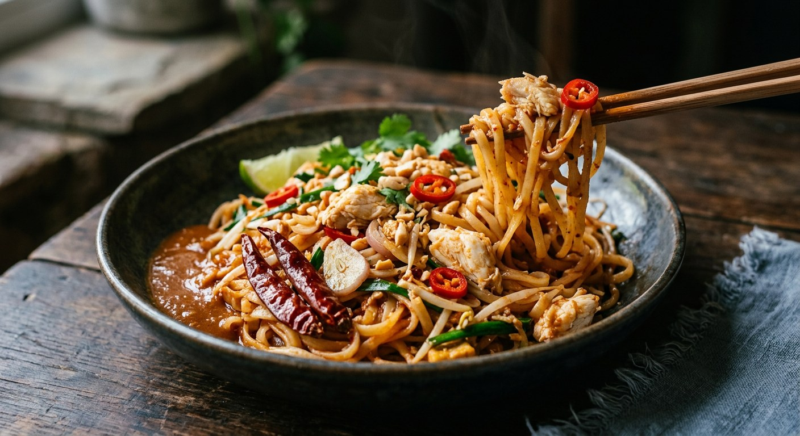

Chanthaburi's own rice noodles, fried in a pounded dried-chilli sauce of palm sugar, tamarind and fish sauce, then tossed with lump crab — the east coast's answer to pad thai.

เส้นจันท์ผัดปู is the dish where Chanthaburi's two claims to fame meet in one wok: sen chan, the thin, chewy rice noodles the province is famous for making, and poo, the crab from its own coastline. Krua.co is blunt about what it actually is — at heart, a fried noodle. Its identity is the chewy noodle plus a bright sweet-sour-salty sauce whose orange-red comes from the skins of dried spur chillies: colour and aroma, as the noodle-makers of เส้นจันท์.com insist, never food colouring.
The dish lives on the street. In Chanthaburi's morning and evening markets, vendors fry it in big woks and bag it in small portions — the after-school snack kids stop for on the way home, eaten from a bag with cucumber, bean sprouts, garlic chives and gotu kola. The crab is flexible: ปูกะตอย, the tiny crabs you crunch whole, is the local favourite; swimmer crab or sea crab in lumps is the richer option; soft-shell crab, fried crisp and folded in whole, is the home-cook's shortcut.
Mahidol's nutritionists record it as an ancient folk dish of Chanthaburi — and their institute did something unusual with it: working with the Khlong Narai housewives' group, they developed a version of the sauce acidic enough to be bagged, sterilised and kept for a year, and it is now exported. Their analysis of the finished bowl — about 65% of energy from carbohydrate, 22% from fat, only 12% from protein — comes with the same advice you'll get from every Thai dietitian: add shrimp, squid or chicken, because crab is the expensive part.
The technique question that divides the sources is where the noodles meet the sauce. The noodle-makers' version — and Mahidol's — puts the noodles into the sauce and fries them patiently over low heat until they have drunk it all up, which is how the flavour gets inside the noodle. The chef versions fry the noodles in oil first and add the sauce after, pad-thai style. Both work; only one is claimed as the Chanthaburi original.
| Thai | English | Amount |
|---|---|---|
| พริกแห้งเม็ดใหญ่ (แกะเมล็ด แช่น้ำ) | Large dried chillies, deseeded and soaked | 2 |
| เกลือ | Salt | ½ tsp |
| กระเทียมไทย | Garlic | 1 tbsp |
| หอมแดงซอย | Shallot, sliced | 1 head |
| น้ำมันรำข้าว | Rice bran oil | 1 tbsp + 1½ tbsp |
| น้ำตาลปี๊บ | Palm sugar | 2 tbsp |
| น้ำมะขามเปียก | Tamarind paste | 2 tbsp |
| น้ำปลา | Fish sauce | 1½ tbsp |
| เส้นจันท์ (แช่น้ำพอนุ่ม) | Sen chan noodles, soaked until soft | 160 g |
| เนื้อปูก้อน | Lump crab meat | 50 g |
| น้ำสะอาด | Water | 3 tbsp |
| ถั่วงอก | Bean sprouts | ½ cup + for serving |
| กุยช่าย (หั่นท่อน) | Garlic chives, cut | 2 stalks + for serving |
| แตงกวา, มะนาว | Cucumber, lime | for serving |
The traditional batch (เส้นจันท์.com, serves a family): 200 g dried sen chan (≈300 g fresh), 300–400 g picked crab, a paste of 10–15 dried chillies with 10–12 shallots and 5–6 garlic cloves, 8–10 tbsp each of palm sugar and thick tamarind juice, 6–7 tbsp fish sauce, finished with sliced spring onion — with the noodles fried in the sauce until they've absorbed it all. The academic bowl (Mahidol): 87 g pounded paste with shrimp paste added, 5 tbsp oil, 5 tbsp tamarind, 2 tbsp palm sugar, 1 tbsp salt, 322 g fresh sen chan and a whole small-clawed crab, served with banana blossom. The sticky variant (Phol, เชฟธนากร): fresh red spur chillies instead of dried, plus 10 g dried shrimp. The home shortcut (Krua.co): 200 g fresh thin rice noodles, ½ cup pad thai sauce, and four soft-shell crabs dusted in crispy flour and deep-fried whole. The two-serving home version (Cheewajit): 350 g noodles, a full cup of crab, and a paste that pounds in a teaspoon of shrimp paste.
Noodles into the sauce, or sauce onto the noodles. The noodle-makers (เส้นจันท์.com) and Mahidol put the noodles into the finished sauce and fry them patiently, adding water little by little, until the sauce is fully absorbed — "the authentic Chanthaburi way", they call it. The chef recipes from Phol Food Mafia, and Krua.co's home version, fry the noodles in oil first and add the sauce afterwards, pad-thai style. Same dish, opposite wok order.
Shrimp paste in the paste. Mahidol and Cheewajit pound กะปิ into the chilli-shallot-garlic paste; the Phol chefs, the noodle-makers and Krua.co leave the paste clean — chillies, shallots, garlic, salt. The shrimp-paste school gets a deeper, funkier sauce.
The crab, and when it meets the noodles. The noodle-makers, both Phol chefs and Mahidol add the crab near the end so the lumps stay whole. Cheewajit alone puts most of the crab in before the noodles and reserves a handful to scatter on top. As for the crab itself: ปูกะตอย eaten whole is the street favourite (Krua.co), lump swimmer or sea crab is the recipe standard, Mahidol uses a whole small-clawed crab, and Krua.co's home version fries soft-shell crabs whole in crispy batter.
Dried or fresh chillies. Five of the six sources start from large dried chillies — the source of the dish's colour. Phol's sticky variant is the outlier, pounding fresh red spur chillies, deseeded, which gives a brighter, fruitier paste with the same orange-red.
The sugar. Palm sugar (น้ำตาลปี๊บ) is the default — Phol's main recipe, the noodle-makers, Mahidol and Cheewajit all use it. Phol's sticky variant reaches for brown sugar, and Krua.co's sauce is built on coconut sugar.
Spring onion or garlic chives. The noodle-makers finish the traditional batch with sliced spring onion; every other recipe finishes with garlic chives — and garlic chives are what every version serves on the side regardless.
This recipe is translated from the following Thai-language sources. Where they disagree, we've said so.
1. Phol Food Mafia — "Stir-fried Rice Noodles with Crab Meat (เส้นจันท์ผัดปู)" by พล ตัณฑเสถียร (the recipe used here) — pholfoodmafia.com
2. เส้นจันท์.com — "สูตรเส้นจันท์อบแห้งผัดปู ต้นตำรับเมืองจันท์" (the traditional batch and the noodles-into-the-sauce rule) — เส้นจันท์.com
3. Krua.co — "แจกสูตร เส้นจันท์ผัดปู ก๋วยเตี๋ยวผัดตำรับคนจันท์ขนานแท้" (the street story and the soft-shell crab home version) — krua.co
4. Mahidol University Institute of Nutrition — "ก๋วยเตี๋ยวผัดปู" (the academic bowl and the exported sauce) — inmu.mahidol.ac.th
5. Phol Food Mafia — "Sticky Crab Noodles (เส้นจันท์ผัดปู)" by เชฟ ธนากร พลอยสีชมพู (the sticky variant with dried shrimp) — pholfoodmafia.com
6. Cheewajit / A Cuisine — "เส้นจันท์ผัดปู เมนูเลื่องชื่อเมืองจันทบุรี อร่อยได้ที่บ้าน" (the two-serving home version, from an Amarin Cuisine book) — cheewajit.com